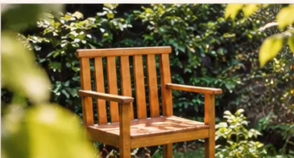

DATA A DEFINIR · EXEMPLO
Rodas que Cuidam
Conversa aberta sobre saúde mental, afetos e vida em coletivo.
CLIQUE AQUI PARA SABER MAIS
Atividade ilustrativa. Data, formato e informações de participação serão disponibilizados quando houver programação confirmada.